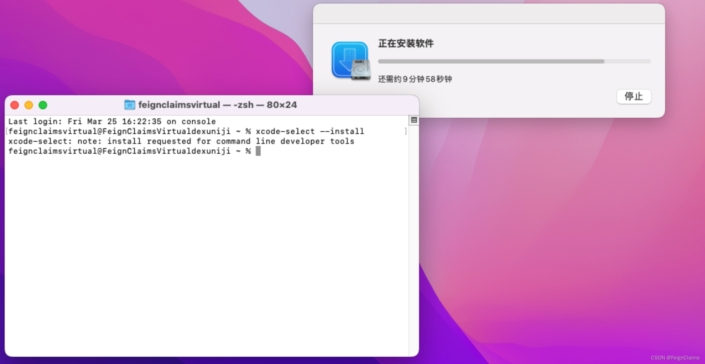

安装 Homebrew
【Command + 空格】打开聚焦搜索，搜索 终端 并打开。
输入
xcode-select --install并【回车】，在弹出的页面中点击【安装】，再点击【同意】，等待安装完成。 安装 xcode-select
在终端输入以下命令设置环境变量：
备注
一行一行地 复制（【Control + C】）、粘贴（【窗口内右键 - Paste】而非【Control + V】！）。
多次 【回车】！ 多次 【回车】！ 多次 【回车】！
等待执行完毕后继续下一行。（确定执行完毕的方法见上文。）
export HOMEBREW_BREW_GIT_REMOTE="https://mirrors.ustc.edu.cn/brew.git"export HOMEBREW_CORE_GIT_REMOTE="https://mirrors.ustc.edu.cn/homebrew-core.git"export HOMEBREW_BOTTLE_DOMAIN="https://mirrors.ustc.edu.cn/homebrew-bottles"
在终端运行以下命令以安装 Homebrew / Linuxbrew。
/bin/bash -c "$(curl -fsSL https://cdn.jsdelivr.net/gh/Homebrew/install@HEAD/install.sh)"
输入
uname -m并【回车】，如果输出arm64则进行第 6 步，否则跳过第 6 步。将 brew 程序的相关路径加入到环境变量中。
echo 'eval "$(/opt/homebrew/bin/brew shellenv)"' >> ~/.bash_profileecho 'eval "$(/opt/homebrew/bin/brew shellenv)"' >> ~/.zprofileeval "$(/opt/homebrew/bin/brew shellenv)"
配置下载镜像源。
备注
如果按照第 6 步备注中的 Next steps 操作了，跳过这一步。
echo 'export HOMEBREW_BREW_GIT_REMOTE="https://mirrors.ustc.edu.cn/brew.git"' >> ~/.bash_profileecho 'export HOMEBREW_CORE_GIT_REMOTE="https://mirrors.ustc.edu.cn/homebrew-core.git"' >> ~/.bash_profileecho 'export HOMEBREW_BREW_GIT_REMOTE="https://mirrors.ustc.edu.cn/brew.git"' >> ~/.profileecho 'export HOMEBREW_CORE_GIT_REMOTE="https://mirrors.ustc.edu.cn/homebrew-core.git"' >> ~/.profileecho 'export HOMEBREW_BREW_GIT_REMOTE="https://mirrors.ustc.edu.cn/brew.git"' >> ~/.zprofileecho 'export HOMEBREW_CORE_GIT_REMOTE="https://mirrors.ustc.edu.cn/homebrew-core.git"' >> ~/.zprofile